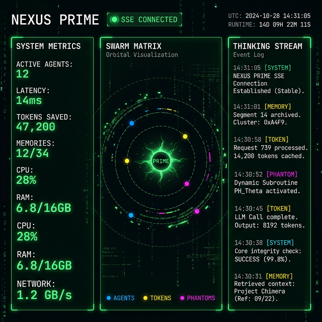

Nexus Prime is the operating system for autonomous AI agents. It provides persistent memory, token optimization, parallel worker swarms, and machine-checked guardrails — all as native MCP tools.
Every AI agent starts each session with amnesia, burns tokens reading entire files, and works alone. Nexus Prime eliminates all three problems.
Stop the "cold start" problem forever. Every insight, bug fix, and architectural decision is stored across sessions. Prefrontal (active working set) → Hippocampus (session cache) → Cortex (SQLite long-term knowledge with 820+ Zettelkasten links).
nexus_store_memory · nexus_recall_memoryHyperTune™ formulates file-reading as a Greedy Knapsack Problem. Paired with Continuous Attention Streams (CAS) and learned codebooks, it maximizes information gain within a strict token budget — saving 50-90% of context costs.
nexus_optimize_tokens · nexus_hypertune_maxParallelize complex tasks using isolated Git Worktrees. Ghost Pass performs read-only risk analysis, while the Merge Oracle evaluates AST diffs using Byzantine consensus, Pearson correlation, and Hierarchical Synthesis.
nexus_ghost_pass · nexus_spawn_workersReplaces explicit IPC messaging with a Shared Quantum-State Vector. Agents share state in a high-dimensional Hilbert space. When one agent acts, the state collapses via Born rule sampling, causing entangled agents to automatically make correlated decisions.
nexus_entangle · nexus_net_syncMachine-checked safety before every destructive operation. Scores actions 0-100 against safety protocols. Blocks `rm -rf`, token window blowouts, and untested mutations before they reach the shell via HITL checkpoints.
nexus_mindkit_check · nexus_audit_evolutionA built-in SSE-powered dashboard streams every memory store, token optimization, phantom worker dispatch, and guardrail check as they happen — 42 event types, zero polling.

30 engine files. 20 MCP tools. One unified runtime where memory, optimization, safety, and parallelism work in concert.
Every capability is exposed as a native MCP tool. Your agent calls them like functions — no SDK, no REST, no overhead.
| Tool | Description |
|---|---|
| nexus_store_memory | Persist insights, decisions, and findings to long-term cortex with priority + tags |
| nexus_recall_memory | Semantic vector search over all memory tiers — finds "login bug" when you search "auth issue" |
| nexus_memory_stats | Monitor cortex health: tier counts, Zettelkasten link density, session telemetry |
| nexus_graph_query | Traverse the knowledge graph via BFS/DFS — discover hidden connections between memories |
| Tool | Description |
|---|---|
| nexus_optimize_tokens | Generate optimized file-reading plans: READ fully, OUTLINE, or SKIP — before wasting tokens |
| nexus_hypertune_max | Deep chunk-level relevance scoring using greedy knapsack optimization |
| nexus_cas_compress | Compress token streams via Continuous Attention Streams with learned codebooks |
| nexus_kv_bridge_status | Monitor Adaptive KV Cache compression ratios and consensus metrics |
| Tool | Description |
|---|---|
| nexus_ghost_pass | Read-only pre-flight risk analysis — returns risk areas, reading plans, and worker approaches |
| nexus_spawn_workers | Dispatch parallel Phantom Workers in isolated Git Worktrees |
| nexus_audit_evolution | Identify recurring failure patterns and file hotspots that need refactoring |
| nexus_session_dna | Generate or load structured state snapshots for perfect session handover |
| Tool | Description |
|---|---|
| nexus_darwin_propose | Propose improvements to core engine code via the Darwin evolutionary loop |
| nexus_darwin_review | Review and validate proposed self-modifications before applying |
| nexus_skill_register | Declaratively register new Skill Cards with cost, tags, and trigger conditions |
| nexus_net_publish | Publish knowledge to the NexusNet federation via GitHub Gist relay |
| nexus_net_sync | Sync learnings from other Nexus Prime instances across machines |
| nexus_entangle | Create quantum-inspired entangled state between cooperating agents |
Three communication channels enable real-time observability, cross-worker synchronization, and cross-machine knowledge sharing.
Every engine emits strongly-typed events (42 types). The Event Bus broadcasts via SSE to the real-time dashboard — see memory stores, token savings, and phantom dispatches live.
nexusEventBus.emit('memory.store', {...})
Phantom Workers exchange findings through a local file-backed pub/sub mesh. Workers publish observations with confidence scores, and the Merge Oracle synthesizes consensus autonomously.
podNetwork.publish(workerId, content)
Share knowledge across machines using a GitHub Gist as a lightweight relay. Agents anonymously publish insights and sync learnings from other Nexus Prime instances — privacy-first with TTL expiration.
nexusNetRelay.publish('knowledge', {...})
Nexus Prime integrates with any MCP-compatible agent: Claude, Gemini, GPT, or custom agents.
Nexus Prime is the operational core of the Sir-Ad AI Ecosystem — where raw code becomes intelligent action.
| Project | Role | Purpose |
|---|---|---|
| Phantom | Orchestrator | "What to build" — High-level task decomposition and release management |
| MindKit | Skills Engine | "How to think" — Routing, declarative skill-cards, and semantic guardrails |
| Nexus Prime | Cognitive OS | "How to run" — Memory topology, token optimization, parallel workers, federation |
| Grain | Language | "How to speak" — Universal AI primitives and CAS compression |